Otomatisasi Workflow Kompleks menggunakan Processing Modeler
[ Download PDF
A4
Letter ]
Alur kerja GIS secara tipikal melalui banyak tahap - dengan sebuah tahap menghasilkan output sekunder yang digunakan di tahap berikutnya. Jika anda mengubah data input atau ingin mengoptimalkan sebuah paramaterm anda akan perlu menjalankan seluruh proses tadi secara manual. Beruntung, QGIS memiliki graphical modeler built-in yang dapat menolong anda mendefiniskan alur kerja anda dan menjalankannya dengan sebuah seruan. Anda dapat menjalankan alur kerja ini sebagai sebuah batch atau tumpukan banyak input.
Tinjauan Tugas
Tutorial ini menunjukkan bagaimana membangun sebuah model untuk mengekstrak area untuk kelas tertentu dari sebah raster land use atau raster pemakaian lahan yang sudah terklasifikasi.
Prosedur
Alur kerja kita untuk latihan ini akan terbagi menjadi tahap-tahap berikut.
Aplikasikan sebuah algoritma xxx pada inputan raster landcover. Ini akan mengurangi noise pada output kita dengan mengeliminasi pixel-pixel terisolir.
Mengkonversi hasil raster ke sebuah layer polygon.
Query sebuah nilai kelas dari tabel attribut layer poligon dan membuat sebuah layer poigon dari kelas tersebut.
Tahap-tahap berikut adalah meringkas proses untuk mengkoding proses di atas menjadi sebuah model dan menjalankannya pada dataset yang sudah diunduh.
Luncurkan QGIS dan akses .

Dialog Processing modeler berisi sebuah panel sebelah kiri dan kanvas utama. Pilih tab Inputs pada panel kiri dan drag + Raster layer ke kanvas.

Sebuah dialog Parameter definition akan muncul . Tekan Input dengan Parameter name dan tandai Yes untuk guilabel:Required . Klik OK.

Anda akan melihat sebuah kotak dengan nama Input muncul di kanvas. Ini merepresentasikan raster landcover yang kita gunakan sebagai input. Langkah selanjutnya adalah untuk mengaplikasikan sebuah algoritma Majority filter . Pindah ke tab Algorithm dari sudut kiri-bawah. Cari algoritma dan anda akan menemukannya pada provider SAGA . Drag atau bawa ke kanvas.
Catatan
If you do not see this algorithm or any of the subsequent algorithms
mentioned in thi tutorial, you may be using the Simplified
Interface of the Processing Toolbox. Switch to the Advanced
Interface by using the dropdown at the bottom of the Processing
Toolbox in the main QGIS window.
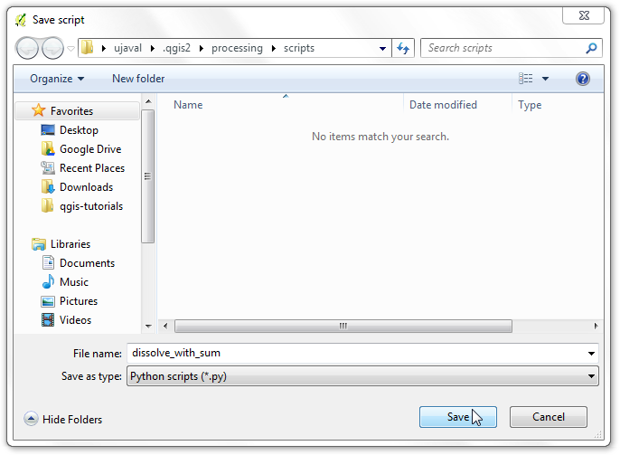
Sebuah dialog konfigurasi untuk Majority Filter akan dihadirkan. Biarkan nilai atau angka pada pengaturan awal dan klik OK.

Anda akan melihat bahwa sekarang ada sebuah kotak baru bernama Majority Filter di kanvas dan ini terkoneksi dengan box Input . Ini terjadi karena algoritma Majority Filter memakai raster Input sebagai inputnya. Langkah berikut pada alur kerja kita adalah dengan mengkonversi output dari majority filter ke vektor. Temukan algoritma Polygonize (raster to vector)` dan drag ke kanvas.
Catatan
Box-box tersebut dapat dipindah dan diatur dengan mengkliknya dan mendragnya sambil menahan tombol kiri mouse. Anda juga dapat menggunakan roda-scroll untuk zoom-in dan out pada kanvas model-

Pilih ‘Filtered Grid’ dari algoritma ‘Majority Filter’ sebagai nilai untuk Input layer. Klik OK.
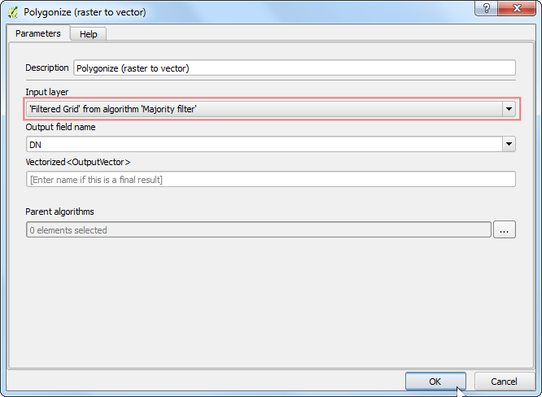
Langkah final pada alur kerja adal untuk melakukan query pada nilai kelas dan membuat layer baru dari fitur yang cocok. Temukan algoritma Extract by attribute dan drag ke kanvas.

Pilih ‘Vectorized’ dari algoritma ‘Polygonize (raster to vector)’ sebagai Input Layer . Kita ingin mengekstrak pixel-pixel yang merepresentaikan Croplands atau lahan pertanian. Nilai pixel yang sesuai dengan kelas ini adalah 12. (lihat Code Values). Masukkan DN pada Selection attribute dan 12 untuk value. Karena output dari operasi ini akan menjadi hasil akhir, kita perlu memeberi nama outputnya. Masukkan vectorized class sebagai Output .

Masukkan Model name dengan vectorize dan Group name sebagai raster . Klik tombol Save
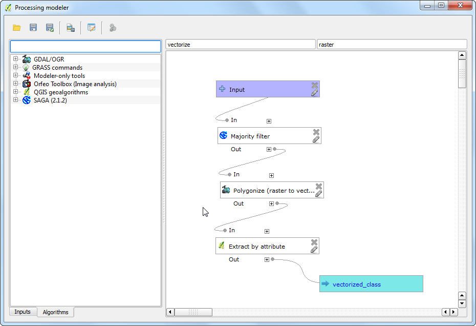
Beri nama model vectorize dan klik Save.
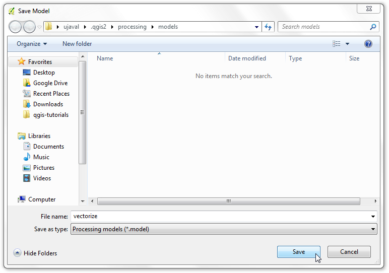
^Sekarang saatnya untuk meguji model kita. Tutup modeler dam pindah ke jendela utama QGIS. Akses .
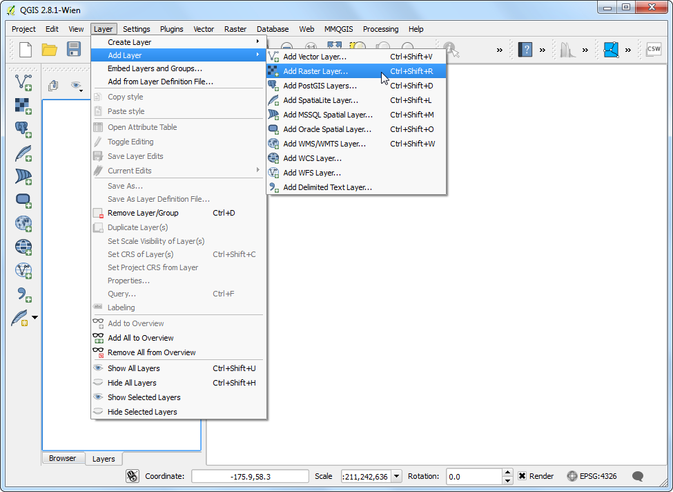
Jelajahi file unduhan LC_hd_global_2001.tif.gz dan klik Open . Ketika raster terbuka, akses .
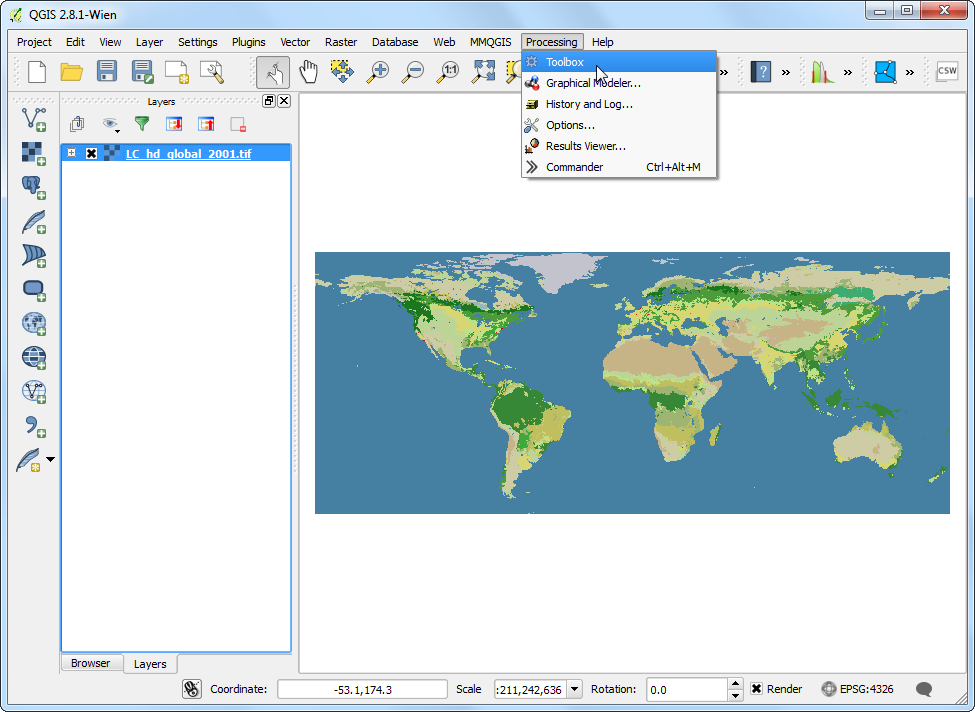
Temukan model yang baru saja dihasilkan pada . Dobel-klik untuk meluncurkan model.
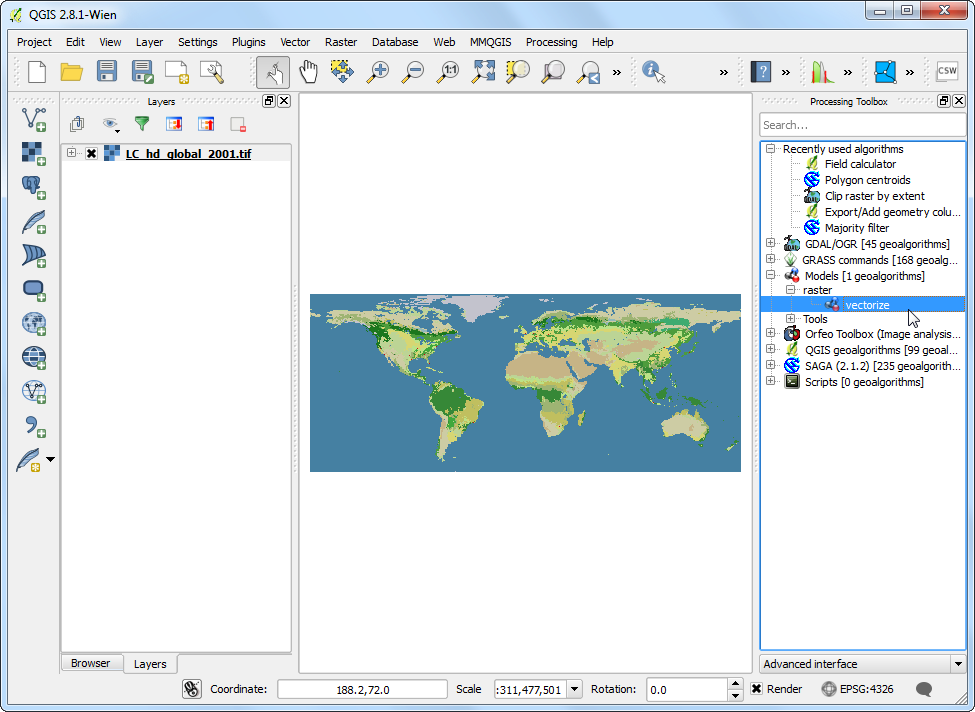
Pilih LC_hd_global_2001 sebagai Input dan klik Run.

Anda akan melihat semua langkah-langkah tereksekusi tanpa ada input dari user. Ketika proses selesai, sebuah layer baru vectorized_class akan ditambahkan ke QGIS. Mari meningkatkan model sedikit. Klik kanan pada model vectorize vectorize dan pilih Edit model.

Pada step 12, kita melakukan hard-coding pada nilai 12 sebagai nilai kelas. Daripada itu, kita dapat menentukannya sebagai sebuah input parameter yang user bisa ubah. Untuk menambah hal ini, pindah ke tab Inputs dan drag + String ke model.
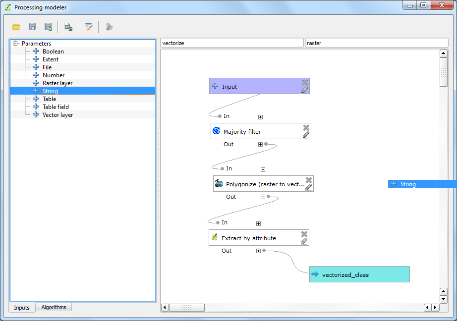
Masukkan Parameter Name sebagai Class. Masukkan ``12``sebagai Default value.
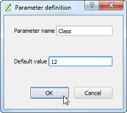
Sekarang kita akan mengubah algoritma Extract by attribute untuk menggunakan input ini daripada nilai hasil hard-koding tadi. Klik tombol Edit pada box Extract by attribute
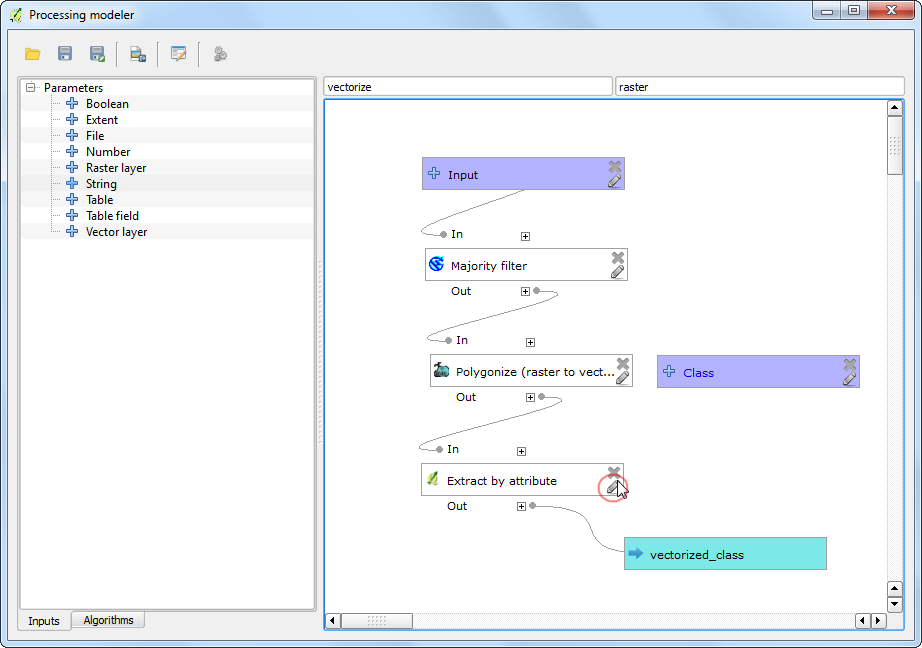
Klik panah dropdown untuk Value dan pilih Class . Klik OK.
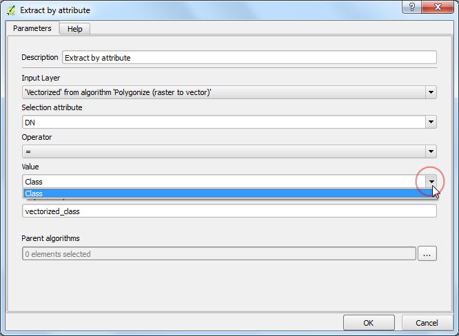
Anda akan melihat bahwa dari diagram model bahwa algoritma Extract by attribute sekarang menggunakan 2 input. Modeler memiliki sebuah shortcut untuk meluncurkan model dan mengujinya. Klik tombol Run dari toolbar
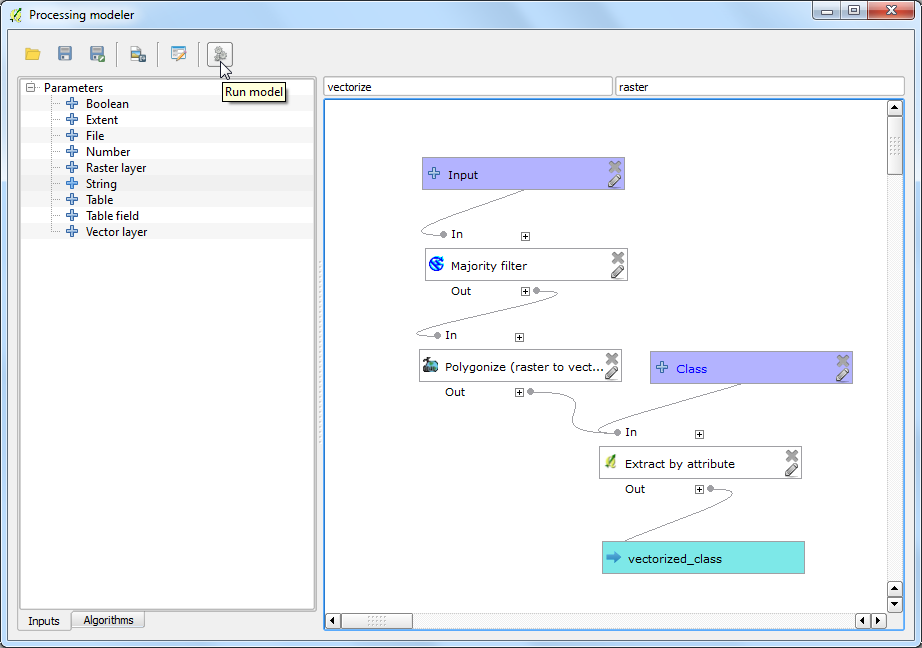
Perhatikan bahwa dialog model memiliki sebuah field baru yang dapat diedit bernama Class . Masukkan nilai 16 pada Class dan klik Run.
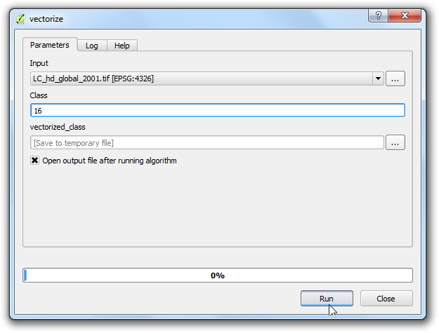
Ketika proses selesai, anda akan melihat bahwa dengan sebuah klik, kita dapat menjalankan sebuah alur kerja yang kompleks dan mengekstrak area untuk kelas 16.

Karena sekarang model kita sudah siap, kita dapat menjalankannya sama mudahnya pada raster baru. Buka file LC_hd_global_2012.tif.gz dengan mengakses . Klik model vectorize` dari panel Processing Toolbox

Ambil layer LC_hd_global_2012 sebagai Input dan klik Run.
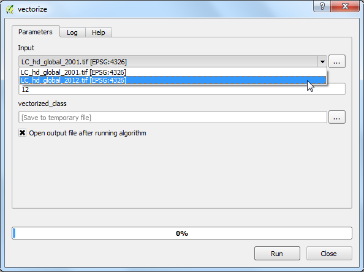
Ketika putput baru sudah terbuka, anda dapat membandingkan perbedaan pada lahan pertanian dari 2001 sampai 2012.
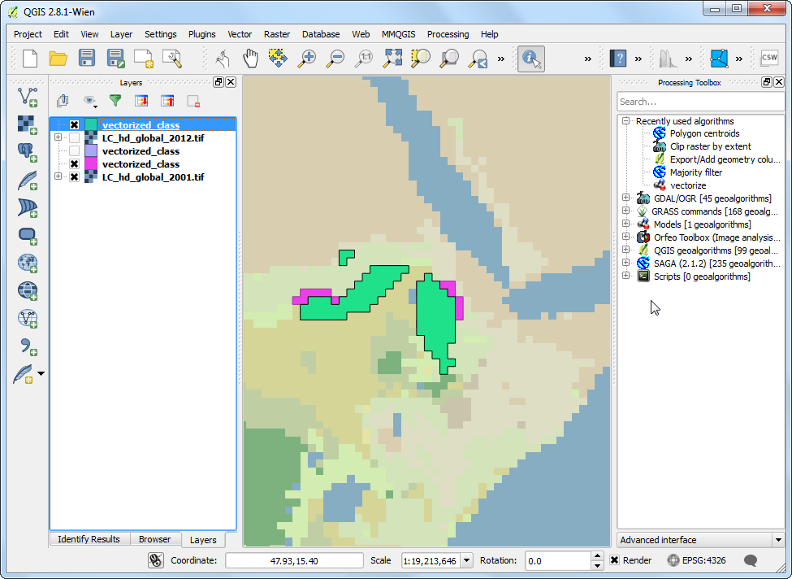
Selalu menjadi ide yang bagus untuk mendambah dokentasi pada model anda. Modeler memiliki built-in: guilabel:Help editor yang membolehkan anda untuk mencangkokkan help langsung di model. Kkik kanan pada model vectorize dan pilih Edit model.

Klik tombol Edit model help dari toolbar.
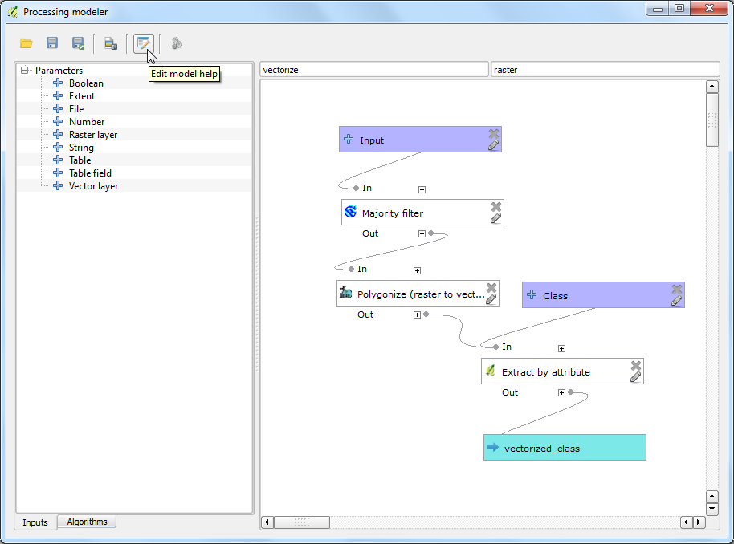
Pada dialog Help editor , pilih item apa saja dari panel Select element to edit dan masukkan teks help pada Element description . Klik OK . Help ini akan tersedia di tab Help saat anda meluncurkan model untuk dieksekusi.

Model dapat menjadi penghemat waktu yang sangat baik dan membuat anda membuat alur kerja anda sekali dan menjalankannya berkali-kali. Anda dapat juga membagi model anda dengan user lain. File model tersimpan di direktori .qgis2 .Anda dapat mengirim file .model ke user lain yang dapat mengkopinya ke direktori yang sesuai pada komputer mereja dan model ini akan muncul pada Processing toolbox . Lokasi direktori model akan bergantung pada platform sebagai berikut: (ganti username dengan nama_login anda)
Windows
c:\Users\username\.qgis2\processing\models\
Mac
/Users/username/.qgis2/processing/models/
Linux
/home/username/.qgis2/processing/models/